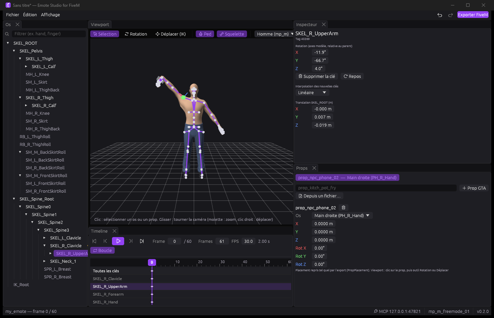
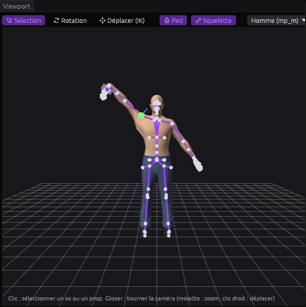
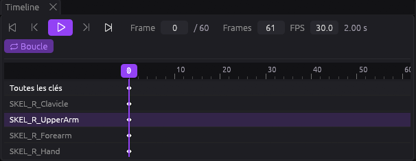

Emote editor for GTA V and FiveM
From a video to a FiveM emote, without leaving the studio
Film a move or import a video, polish the pose on the real ped skeleton, then export a stream-ready resource, compiled animation included.

Three steps, one tool
-
01
Capture
Import a video (mp4, mov, mkv…) or record yourself on the webcam. Body and finger detection runs locally on your graphics card, and the motion is transferred to the GTA V skeleton.
-
02
Polish
Fix the pose in the 3D viewport: rotation rings, IK moves for the hand, foot or pelvis, frame-by-frame timeline, mirrored pose copy and paste.
-
03
Export
One click builds a complete FiveM resource: manifest, animation compiled to
.ycdand prop placement, with the entries for mc_emotes, dpemotes, rpemotes and scully_emotemenu.

The real skeleton, not an approximation
On first launch, the studio reads the skeleton and body of the male and female freemode peds from your GTA V installation. Read-only: nothing in the game is modified.
- Two-bone IK for arms and legs, pelvis that lowers with planted feet
- The clavicle follows the raised arm: the shoulder keeps its shape, in game too
- Dual-quaternion skinned preview, no collapsed shoulders
- Male / female switch: keys follow the bone names

A timeline you read at a glance
One row per animated bone, one row for all keys. Click to move the playhead, right-click to delete a key, Ctrl + wheel to zoom.
- Linear, Bézier or stepped interpolation
- Clean loops: the last frame joins the first on export
- Undo and redo on every action, autosave every minute
A stream-ready resource
The studio writes the resource, compiles the animation with CodeWalker and prepares the entry to paste into your emote menu. Up to two props (Prop and SecondProp), placed with the mouse in the viewport and carried over as-is into the emote placement.
- GTA props by model name, or from a
.ydr/.yddfile - Emote options: loop, upper body while moving, frozen on the last frame
- Readable
.emoteproject, to pick the work up later
mcs_emotes/
├── fxmanifest.lua
├── stream/
│ └── mcs@wave.ycd animation
└── emotes_snippets.txt menu entries# a single command to connect Claude
claude mcp add gyra -- Gyra.exe mcp
# then, in plain language
"Raise the right arm for a wave,
loop it over 2 seconds, export it"AI-controllable, live
Gyra.exe mcp is an MCP server: an AI such as Claude sets keys, moves limbs, adds props, takes a render to check its work and exports the resource.
- Every change shows up in the window and can be undone with Ctrl+Z
- The studio is launched automatically if it is closed
- Local bridge only, protected by a token

Your workspace, just as you left it
Panels you can move, group into tabs or hide, restored on every launch. Interface in French or English, accent color of your choice.
Download Gyra
A self-contained folder of about 215 MB: unzip it and run Gyra.exe. No .NET or Visual C++ runtime to install.
- Version
- 0.2.0
- System
- Windows 10 or 11, 64-bit
- Requires
- GTA V installed, for the ped skeleton and body
- Languages
- French, English